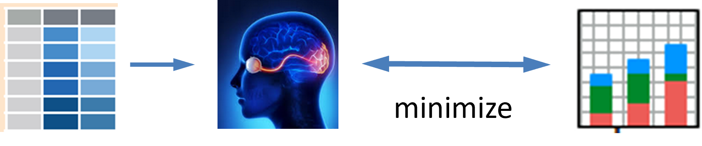
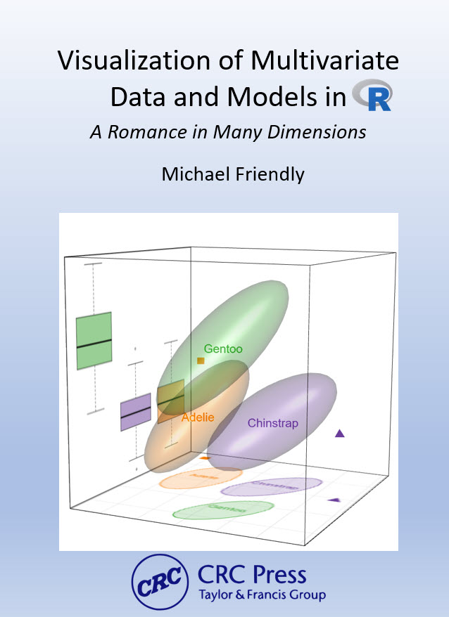

Preface
This book is about graphical methods developed recently for multivariate data, and their uses in understanding relationships when there are several aspects to be considered together. Data visualization methods for statistical analysis are well-developed and widely available in R for simple linear models with a single outcome variable, as well as for more complex models with nonlinear effects, hierarchical data with observations grouped within larger units and so forth.
However, with applied research in the sciences, social and behavioral in particular, it is often the case that the phenomena of interest (e.g., depression, job satisfaction, academic achievement, childhood ADHD disorders, etc.) can be measured in several different ways or related aspects. Understanding how these different aspects are related can be crucial to our knowledge of the general phenomenon.
For example, if academic achievement can be measured for adolescents by reading, mathematics, science and history scores, how do predictors such as parental encouragement, school environment and socioeconomic status affect all these outcomes? In a similar way? In different ways? In such cases, much more can be understood from a multivariate approach that considers the correlations among the outcomes. Yet, sadly, researchers typically examine the outcomes one by one which often only tells part of the data story.
However, to convey the statistical and graphic methods to do these things, I begin with some warm-up exercises in multivariate thinking, with a grand scheme for statistics and data visualization, a parable, and an example of multivariate discovery.
TODO: Include an overview of the parts and chapters somewhere here
Features
Some key substantive and pedagogical features of the book are:
The writing style is purposely pedagogical (hopefully not too pedantic), in that it aims to teach how to think about analysis and graphics for multivariate data. That is, I try to convey how you can achieve understanding of statistical concepts and data visualization through ways of representing those ideas in diagrams and plots, and producing graphics using R functions and packages.
To help understand the how modern statistical and graphic methods became more powerful over time, the book takes a historical perspective, where it is useful to convey how the innovations we use today evolved.
Statistical data visualization is cast in a general framework by their goal for communicating information, either to your self or others (such as see the data, visualize a model, diagnose problems), rather than a categorization by graphic types like bar charts and line graphs. This is best informed by the principles and goals of communication, for example making graphic comparison easy and ordering factors and variables according to what should be seen, called effect ordering for data display (Friendly & Kwan, 2003).
Data visualization is seen as a combination of exposure—plotting the raw data—and summarization— plotting statistical summaries—to highlight what should be noticed. For example, data ellipses and confidence ellipses are widely used as simple, effective summaries of data and fitted model parameters. When the data is complex, the idea of visual thinning can be used to balance the tradeoff.
The book exploits the rich connections among statistics, geometry and data visualization. Statistical ideas, particularly for multivariate data, can be more easily understood in terms of geometrical ones that can be seen in diagrams and data displays. More importantly, ideas from one domain can amplify what we can understand from another.
These graphical tools can be used to understand or explain a wide variety of statistical concepts, phenomena, and paradoxes such as Simpson’s paradox (Simpson’s paradox: marginal and conditional relationships), effects of measurement error (Measurement error), bias-variance tradeoff (Visualizing the bias-variance tradeoff), and so forth.
The HE (“hypothesis - error”) plot framework provides a simple way to understand the results of statistical tests and the relations among response outcomes in the multivariate linear model.
Dimension reduction techniques such as PCA and discriminant analysis are presented as “multivariate juicers”, able to squeeze the important information in high-dimensional data into informative two-dimensional views. But sometimes, the most important information for a problem lies in the smallest dimensions, as is the case in outlier detection (Multivariate normality and outliers), collinearity (Collinearity biplots) and ridge regression (Low-rank views).
What I assume
It is assumed that the reader has at least a basic background in applied, intermediate statistics. This would normally include material on simple and multiple regression as well as simple analysis of variance (ANOVA) designs. This also means that you should be familiar with the basic ideas of statistical inference including hypothesis tests and confidence intervals.
There will also be some mathematics in the book where words and diagrams are not enough. The mathematical level will be intermediate, mostly consisting of simple algebra. No derivations, proofs, theorems here!
For multivariate methods, it will be useful to express ideas using matrix notation to simplify presentation. It will be enough for you to recognize that a single symbol \(\mathbf{y}\) can be a shorthand for \(n\) scores on a variable like weight, and the symbol \(\mathbf{X}\) can represent an entire data table, with, say \(n\) observations on \(p\) variables like height, body mass index, diet components, and so forth. Then, the notation \(\mathbf{y} = \mathbf{X} \boldsymbol{\beta}\) represents an entire linear model to relate weight to these other variables. I’m using this math notation to express ideas, and all you will need is a reading-level of understanding.
For this, the first chapter of Fox (2021), A Mathematical Primer for Social Statistics, is excellent, and the rest is well worth reading. If you want to learn something of using matrix algebra for data analysis and statistics in R, I recommend our package matlib (Friendly et al., 2024).
R Resources
I also assume the reader to have at least a basic familiarity with statistical analysis in R. While R fundamentals are outside the scope of the book, I believe that this language provides a rich set of resources, far beyond that offered by other statistical software packages, and is well worth learning. For those not familiar with R or wish to learn new skills, I recommend:
- Cotton (2013), Learning R (online) provides a well-rounded basic introduction to R, covering data types, lists and data frames, functions, packages and workflow for data analysis and graphics;
- Matloff(2011), The Art of R Programming (online) is devoted to learning the programming features of R. It covers all the basics (data types, arrays, data frames), R functions, object-oriented programming, debugging, and so forth.
- Wickham(2019), Advanced R (online) is aimed at intermediate R programmers who want to dive deeper into R and learn how things work,
- Long & Teetor (2019), R Cookbook 2\(^{nd}\) Ed (online) provides how-to recipies for basic tasks from working with RStudio, to input and output, general statistics, graphics, and regression / ANOVA;
- Fox & Weisberg (2018), An R Companion to Applied Regression is a fantastic resource for learning how to perform statistical analyses in R and visualize results with insightful graphics. It is the companion book to Fox’s (2016), Applied Regression Analysis and Generalized Linear Models, which I consider the best intermediate-level modern treatment of these topics. I make heavy use of the accompanying car package (Fox & Weisberg, 2019) which provides important and convenient graphical methods.
When you work with R, it may be useful to have this collection of R and RStudio cheatsheets I prepared for my graduate data visualization course.
R graphics resources
In this book, I create a large number of graphs in R, and have aimed to present and describe how I do them using R packages and code to manipulate the data or numerical output from analysis function, so that you can learn from these examples to apply these ideas to your own data.
In writing this, I’ve also tried to exemplify graphical principles that underlie effective graphic communication. You might find the lecture notes, extensive resources and R examples for my course, Psychology of Data Visualization useful.
In addition, there are a few books I recommend:
Claus Wilke (2019), Fundamentals of Data Visualization (online) A well thought out presentation of important ideas of graphic presentation; it covers a wide range of topics, with good practical advice and lots of examples. How to do these in R is covered in his course notes.
Keiran Healy (2019), Data Visualization: A Practical Introduction (online). A highly accessible, hands-on primer on how to create effective graphics from data using ggplot2, with a focus on how to think about the information you want to show.
Antony Unwin (2024), Getting (more out of) Graphics. This book offers a collection of 25 case studies of interesting datasets, exemplifying desirable features of graphs use to understand them and using ggplot2 graphics. A second part provides useful advice on graphical practice, drawing on the lessons of the examples from the first part. The R code for all chapters is available online.
Nicola Rennie (2025), The Art of Data Visualization with ggplot2 (online). Rennie offers a kind of master class in designing effective, attractive graphics using ggplot2. The examples chosen stem from the weeklyTidy Tuesday challenges that invite graphic programmers and designers to to work on a shared dataset to see what they can do.
R coding style used here
Note to reviewers
The coding style for computing and graphics used in this book are expressed using both the traditional functional syntax, f(g(x)) and the newer approach using pipes (|>) of the tidyverse. Similarly, I use both base R graphics and plots based on the “ggverse” of ggplot2 and it’s large family of add-on and extension packages.1
How and why it is this way should be explained to the reader. The material below is a start, but needs a bit of fleshing out or editing down.
Like natural language and the graphic methods used in this book, R syntax and the programming style for graphics has evolved considerably since R was first introduced by Ross Ihaka and Robert Gentleman in 1992. It was originally based on the S programming language (Becker et al., 1988) and designed as a functional language. This means that programs are constructed by applying and composing functions, like log(x), exp(x), which return a value. …
- pipes
- tidyverse
- R graphics:
plot()->ggplot()
Rather than being dogmatic about using the newest, most politically correct style,2 in this book I have taken the view that what is most important about programming and graphics software is that they serve as a route—as short and direct as possible—between having an idea in your head of what you want to do, and seeing the result on your screen or in your report, as illustrated in Figure 1.
Consequently, for nearly every graph in this book, I used what I considered to be the most effective style to produce an admirable graphic, but—perhaps more importantly–to be able to describe how I coded that to the reader.
For example, the car package and my heplots and related packages use base-R graphics, but I could customize their use in examples by using the conventions of points(), lines(), text() and even par() when necessary. However, if I was starting this project anew, I would now use tinyplot (McDermott et al., 2025), which has removed many of the cringeworthy features of base-R graphics.
On the other hand, ggplot2 package was designed to be an elegant language, based on the grammar of graphics (Wilkinson, 1999). It allows you to think of building plots logically and coherently, layer by layer. Instead of memorizing specific function calls and their arguments for every type of chart, you learn a flexible, high-level language for describing what you want your graphic to look like. This promotes a more structured thinking about data visualization, making it easier for you to iterate3, as we always do, to create beautiful, publication-quality graphics.
This is great in theory, but as you will see here, in many code examples, beyond the basic geom_* elements, a good deal of the effort to produce them required multiple steps to (a) get my data into a tidy format, (b) assign proper scale_*s to data variables and (c) use theme() arguments to control the large and small aspects of graphic design that contribute to the elegance and potential beauty of finished product you see.
Consequently, this book stands on the shoulders of several giants in R graphics software, but the goal of reducing the gap between the idea of a graph and the visual result can still be narrowed.
Typographic conventions used in this book
The following typographic conventions are used in this book:
italic : indicates terms or phrases to be emphasized or defined in the text; bold : is used for terms to be given strong emphasis, particularly for their first mention.
Package names are printed in bold and colored brown, for example ggplot2, car and the matlib package. These uses generate citations like ggplot2 (Wickham, 2016) on their first use. Package references in the text are automatically indexed, individually and under a “Packages” heading.
Datasets are rendered as their name in monospaced font, like
Prestigeor indicating the package from which they come, as incarData::Prestige. These too are automatically indexed.A monospaced
typewriterfont is used in the text to refer to variable and function names, such aseducationandplot(). This font is also for R statement elements, keywords and code fragments as well.R code in program listings and output is presented in a
monospaced (typewriter)font,fira mono
- For R functions in packages, I use the notation
package::function(), such ascar::Anova(), to identify that theAnova()function is defined in the car package. This also means you can get help on a function by typing?car::Anovain the console, or a list of its arguments and default values fromargs(car::Anova).
Acknowledgements
I am profoundly grateful to my friends and colleagues John Fox, Georges Monette and Phil Chalmers at York University who have inspired me with their insights into statistical thinking and visualization of statistical ideas over many years. They also contributed greatly to the R packages that help make the methods of this book accessible and easy to use.
There is also a host of graduate students I have taught, supervised and worked with over my 50+ year career. Among these, Ernest Kwan and Matthew Sigal were important contributors to the development of data visualization ideas and techniques reflected here. Agnieska Kopinska, Gigi Luk and Touraj Amiri were TAs and RAs who contributed to my teaching and research. Most recently, Udi Alter and Michael Shiuming Truong worked as research assistants and helped me in numerous ways with work on this book.
Writing this book using Quarto within the RStudio (now Posit) development environment presented many technical challenges I had not encountered in previous books (Friendly & Meyer (2016)). I am grateful to Mickaël Canouil, Christophe Dervieux, Felix Benning and others in the quarto-dev community who graciously helped me solve many issues, and again to Michael Shiuming Truong who helped with this effort with incisive comments, suggestions and an eagle-eye to typographic and programming details.
The book also relies heavily on the graphic ideas and software of many R developers, including Cory Brunson, Vincent Arel-Bundock, Di Cook, John Fox, Duncan Murdoch, who replied to issues and feature requests on their packages. I am also indebted to Gina Reynolds, Teun van den Brand and other participants in the the ggplot2 extenders club for help with ggplot() methods I needed for things like labeling “noteworthy” observations in plots.
The official ggplot2 extensions gallery website, lists 151 registered extension packages available as of this writing. There is also the ggplot2 extenders club, an active group of developers organized by Gina Reynolds and Teun van den Brand, who aim to facilitate thinking about further growth of
ggplotideas and implementations.↩︎See Norm Matloff’s essay Tidyverse Skeptic. He argues that the tidyverse is not a good vehicle for teaching novice, noncoders, and that using base-R as the vehicle of instruction brings students to a more skilled level, in shorter time.↩︎
You should think of the “80-20” graphics rule when you work. This says you can produce 80% of your finished graphic with 20% of your total effort. But the corollary is that it takes you 80% of your time to fix the limitations of the remaining 20%.↩︎